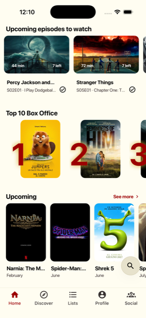
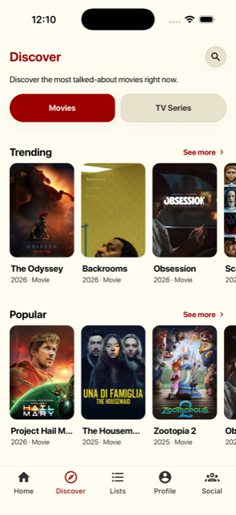
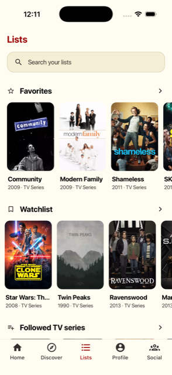
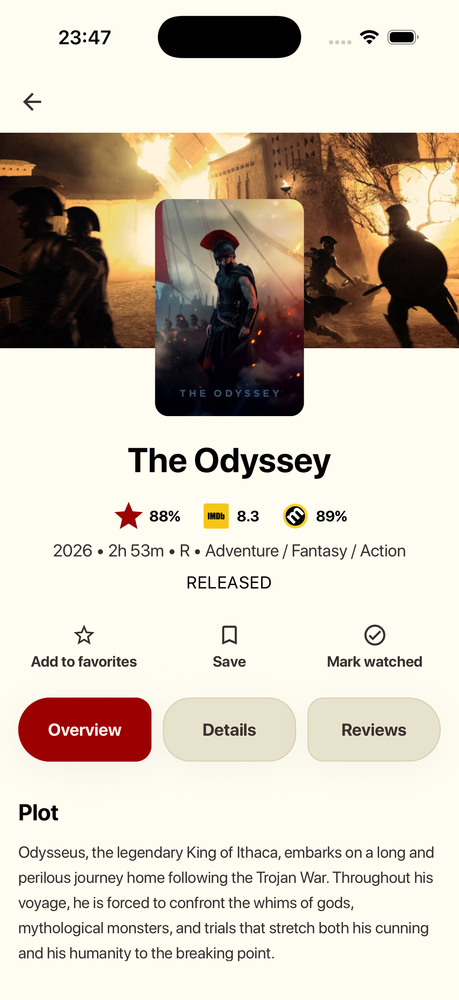
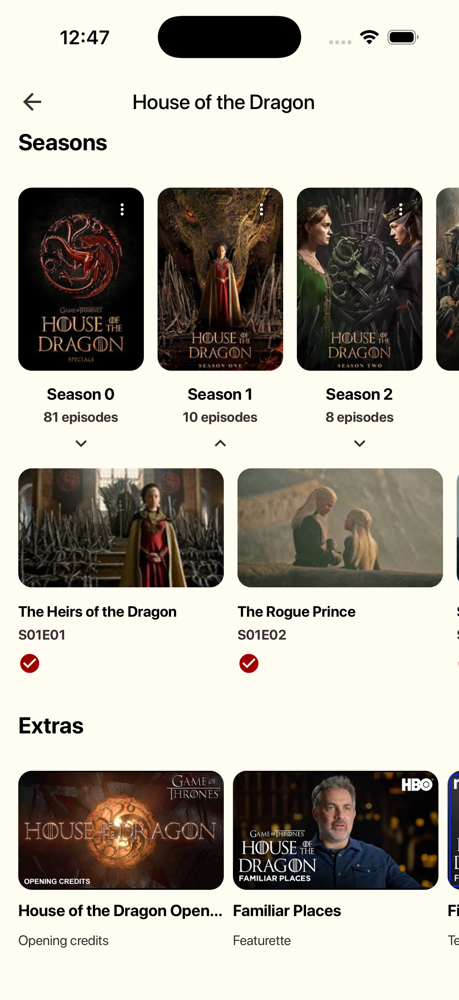
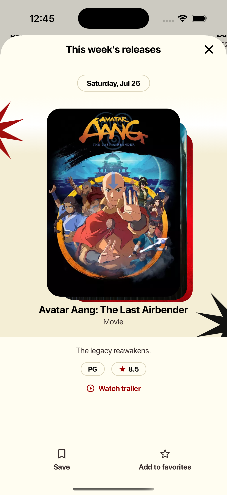
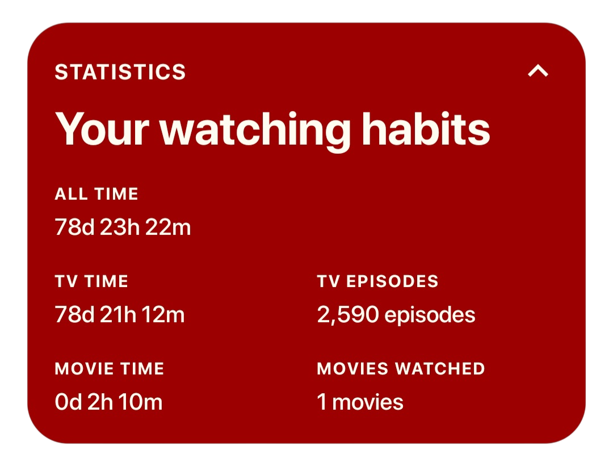
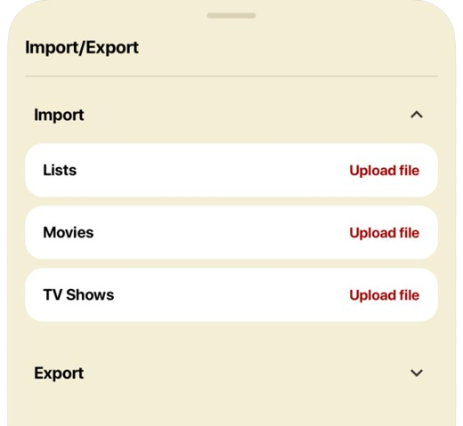

Sync con Trakt
Il tuo profilo Trakt sempre aggiornato: watchlist, cronologia e valutazioni incluse.
Traccia · Scopri · Rivivi
CinePunks sincronizza la tua libreria Trakt, il calendario delle uscite e le tue liste in un'unica app veloce e senza pensieri.
Funzionalità
Il tuo profilo Trakt sempre aggiornato: watchlist, cronologia e valutazioni incluse.
Non perdere una puntata: uscite di film e serie organizzate giorno per giorno.
Crea, condividi e scopri collezioni curate dalla community.
Riprendi da dove hai lasciato, episodio dopo episodio, senza cercare.
Segui amici, leggi recensioni e scopri cosa sta guardando la community.
Italiano, English, Español, Français, Deutsch. Tema chiaro o scuro a scelta.
Screenshot








FAQ
Un'app per tracciare film e serie TV che segui, con calendario uscite, liste personali e collezioni condivise con la community.
Sì, CinePunks usa Trakt per sincronizzare cronologia, watchlist e valutazioni tra tutti i tuoi dispositivi.
L'app è gratuita. I dettagli su eventuali funzionalità aggiuntive saranno comunicati al lancio.
iOS disponibile ora su App Store. Android in arrivo su Google Play.
Sì. CinePunks non richiede credenziali proprie: l'accesso avviene tramite l'autenticazione ufficiale Trakt, e nessun dato sensibile viene salvato in chiaro sul dispositivo.
Scrivi all'indirizzo indicato nella sezione Contatti qui sotto.